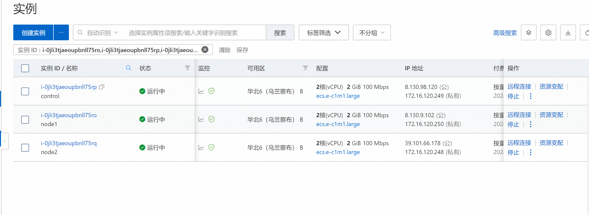
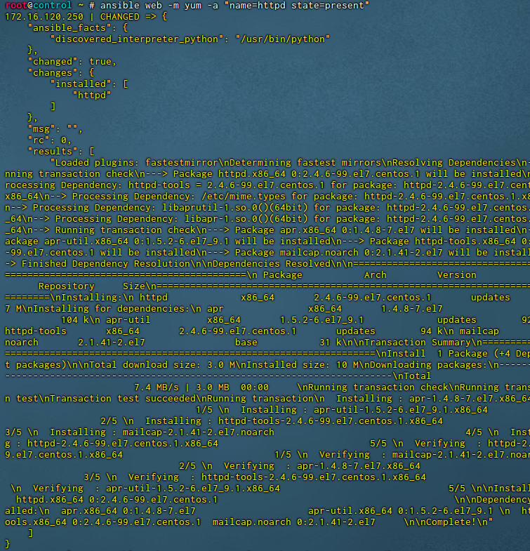
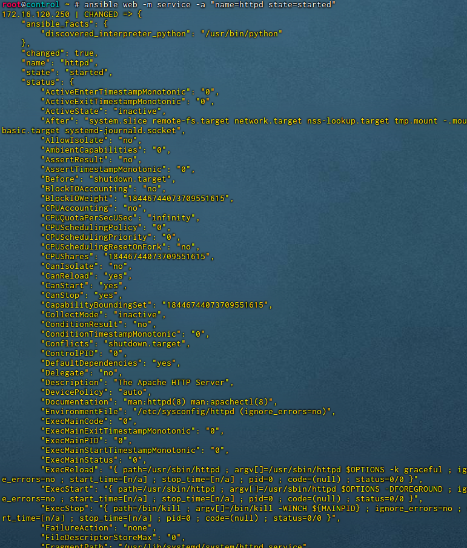
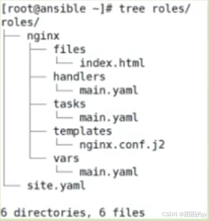
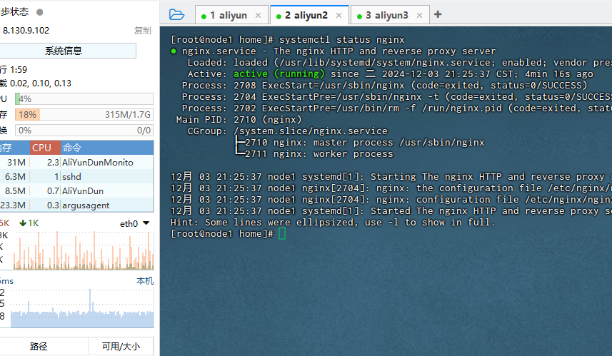
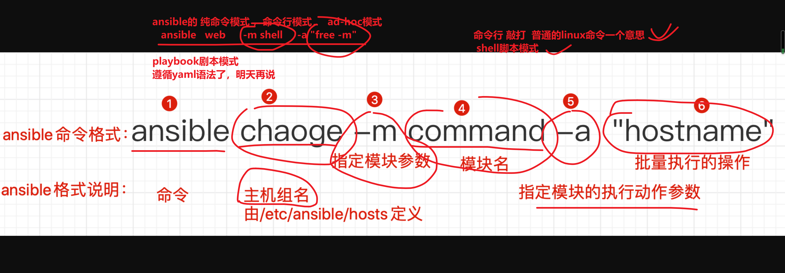

ansible基础¶
1.软件介绍
环境准备，密码都是Gww603397654
| 主机名 | 系统 | IP地址 | 角色 |
|---|---|---|---|
| control | centos7.9 | 172.16.120.249 | 控制节点（manager） |
| node1 | centos7.9 | 172.16.120.250 | 被控制节点（web2） |
| node2 | centos7.9 | 172.16.120.248 | 被控制节点（database） |

在这三台服务器上使用 Ansible 来学习自动化操作是一个很好的实践。下面我将指导你如何使用这三台 CentOS 7.9 服务器配置并执行基础的 Ansible 操作。
1. 准备工作¶
首先，确保你的所有服务器都可以相互通信，并且能够通过 SSH 登录。根据你提供的 IP 地址，它们应该能够互相访问。
修改三台服务器的主机名。便于后期查看
sudo hostnamectl set-hostname <新的主机名>
2. 安装 Ansible¶
在 控制节点 (control) 上安装 Ansible：
sudo yum update -y
sudo yum install epel-release -y
sudo yum install ansible -y
通过运行 ansible --version 验证 Ansible 是否安装成功。
ansible --version
3. 配置 SSH 免密登录¶
为了让 Ansible 能够无密码地管理所有节点，你需要在控制节点上为 Ansible 配置 SSH 密钥对。
生成 SSH 密钥对（如果尚未生成）¶
在 控制节点 (control) 上执行以下命令：
ssh-keygen -t rsa
按提示操作，一般直接按回车即可。
将 SSH 公钥复制到所有被控制节点¶
使用 ssh-copy-id 将公钥复制到 node1 和 node2 上，分别执行以下命令：
ssh-copy-id 172.16.120.250
ssh-copy-id 172.16.120.248
ssh-copy-id 172.16.120.249
输入每台服务器的密码（你提供的密码是 Gww603397654）以完成 SSH 免密登录配置。
你可以通过运行以下命令测试免密登录是否成功：
ssh 172.16.120.250
ssh 172.16.120.248
ssh 172.16.120.249
如果你能够直接登录而不输入密码，则说明免密登录配置成功。
root@control ~ # ssh 172.16.120.250
Last login: Tue Dec 3 19:58:11 2024 from 110.184.149.83
Welcome to Alibaba Cloud Elastic Compute Service !
[root@node1 ~]# exit
登出
Connection to 172.16.120.250 closed.
root@control ~ # ssh 172.16.120.248
Last login: Tue Dec 3 19:58:42 2024 from 110.184.149.83
Welcome to Alibaba Cloud Elastic Compute Service !
[root@node2 ~]# exit
登出
Connection to 172.16.120.248 closed.
root@control ~ #
root@control ~ # ssh 172.16.120.249
Last login: Tue Dec 3 19:59:55 2024 from 110.184.149.83
Welcome to Alibaba Cloud Elastic Compute Service !
root@control ~ # exit
登出
Connection to 172.16.120.249 closed.
root@control ~ #
4. 配置 Ansible 主机清单 (inventory)¶
Ansible 使用一个清单文件来定义所有受管理节点的 IP 地址和主机名。你需要在 控制节点 (control) 上创建一个清单文件。
编辑 /etc/ansible/hosts 文件（如果文件不存在，可以创建它）：
sudo vim /etc/ansible/hosts
将以下内容添加到文件中：
[all:vars]
ansible_user=root
#ansible_ssh_pass=Gww603397654 这里可以不写密码
ansible_become=true
[control]
172.16.120.249
[nodes]
172.16.120.250
172.16.120.248
[web]
172.16.120.250
[database]
172.16.120.248
这个文件定义了两个组：web 和 database，分别包含 node1 和 node2 的 IP 地址。
5. 验证 Ansible 配置¶
现在，你可以通过运行 ansible 命令来测试连接是否成功。首先测试控制节点是否能够成功连接到所有被控制节点：
ansible all -m ping
如果一切设置正确，你应该看到类似下面的输出，表示所有节点的连接成功：
172.16.120.249 | SUCCESS | rc=0 >>
pong
172.16.120.250 | SUCCESS | rc=0 >>
pong
172.16.120.248 | SUCCESS | rc=0 >>
pong
6. 执行基本的 Ansible 操作（常用模块）¶
接下来，你可以尝试一些基本的 Ansible 操作。
详细的模块学习可以参考
6.1. 运行一个简单的命令¶
使用 ansible 命令来执行一个简单的操作，比如获取 node1 和 node2 的主机名：
ansible all -m command -a "hostname"
这将会在所有节点上运行 hostname 命令，显示各节点的主机名。
6.2. 安装软件包yum和service模块¶
可以使用 Ansible 的 yum 模块来安装软件包。例如，安装 httpd（Apache Web 服务器）：
ansible web -m yum -a "name=httpd state=present"
这个命令将在 web 组中的所有节点上安装 Apache Web 服务器。如果需要，你可以验证安装是否成功：
ansible web -m service -a "name=httpd state=started"
这将确保 Apache 服务启动并运行。
其他命令
ansible web -m service -a 'name=httpd state=started enabled=yes' ####开机自启动
ansible web -m service -a 'name=httpd state=stoped' ###停止
ansible web -m service -a 'name=httpd state=restarted' ####重启


6.3. 拷贝文件¶
使用 copy 模块将文件从控制节点复制到被控制节点。例如，将一个本地文件复制到 node1：
ansible web -m copy -a "src=/path/to/local/file dest=/path/to/remote/file"
另外如果是想从远程机器拿文件到控制端可以使用下面的命令
ansible web -m fetch -a 'src=/tmp/1.txt dest=root'
root@control / # ls
bin dev home lib64 media opt root sbin sys usr
boot etc lib lost+found mnt proc run srv tmp var
root@control / # cd /home
root@control /home # ls
root@control /home # touch 1.txt
root@control /home # ls
1.txt
root@control /home # ansible web -m copy -a "src=/home/1.txt dest=/home"
172.16.120.250 | CHANGED => {
"ansible_facts": {
"discovered_interpreter_python": "/usr/bin/python"
},
"changed": true,
"checksum": "da39a3ee5e6b4b0d3255bfef95601890afd80709",
"dest": "/home/1.txt",
"gid": 0,
"group": "root",
"md5sum": "d41d8cd98f00b204e9800998ecf8427e",
"mode": "0644",
"owner": "root",
"size": 0,
"src": "/root/.ansible/tmp/ansible-tmp-1733228354.96-23809-115754000292483/source",
"state": "file",
"uid": 0
}
root@control /home #
6.4. 执行 playbook¶
你还可以编写 Ansible Playbook 来自动化更复杂的任务。首先，创建一个简单的 playbook 文件 example.yml：
---
- name: Install and start Apache on web nodes
hosts: web
become: true
tasks:
- name: Install httpd
yum:
name: httpd
state: present
- name: Start httpd service
service:
name: httpd
state: started
root@control /home # ansible-playbook example.yml --list-hosts
#列出主机
playbook: example.yml
play #1 (web): Install and start Apache on web nodes TAGS: []
pattern: [u'web']
hosts (1):
172.16.120.250
root@control /home # ansible-playbook example.yml --list-tasks
#列出任务
playbook: example.yml
play #1 (web): Install and start Apache on web nodes TAGS: []
tasks:
Install httpd TAGS: []
Start httpd service TAGS: []
root@control /home #
root@control /home # ansible-playbook example.yml --syntax-check
#检查语法
playbook: example.yml
然后运行这个 playbook：
ansible-playbook example.yml
这个 playbook 会在所有 web 节点上安装并启动 Apache 服务。
root@control /home # ansible-playbook example.yml
PLAY [Install and start Apache on web nodes] ******************************************************
TASK [Gathering Facts] ****************************************************************************
ok: [172.16.120.250]
TASK [Install httpd] ******************************************************************************
ok: [172.16.120.250]
TASK [Start httpd service] ************************************************************************
ok: [172.16.120.250]
PLAY RECAP ****************************************************************************************
172.16.120.250 : ok=3 changed=0 unreachable=0 failed=0 skipped=0 rescued=0 ignored=0
6.5查看各节点负载¶
root@control /home # ansible all -a "uptime"
172.16.120.248 | CHANGED | rc=0 >>
20:23:54 up 53 min, 3 users, load average: 0.04, 0.07, 0.05
172.16.120.250 | CHANGED | rc=0 >>
20:23:54 up 53 min, 3 users, load average: 0.53, 0.30, 0.22
172.16.120.249 | CHANGED | rc=0 >>
20:23:54 up 26 min, 3 users, load average: 0.09, 0.11, 0.07
root@control /home #
6.6用户模块¶
（1）创建用户
ansible web -m user -a 'name=test state=present'
（2）修改密码
生成加密密码
[root@ansible ~]# echo '123456' |openssl passwd -1 stdin
$1$bYfCvrIS$YnSldRWGYs3/DQTgFUH.9.
ansible web -m user -a 'name=test password="$1$bYfCvrIS$YnSldRWGYs3/DQTgFUH.9." append=yes'
###append表示追加，这个参数告诉 Ansible 如果用户 test 已经存在，则追加信息而不是替换现有的用户信息。如果设置为 no，则每次运行命令时都会替换用户密码
（3）修改shell
ansible web -m user -a 'name=test shell=/sbin/nologin append=yes'
#/sbin/nologin 是一个特殊的 shell，它不允许用户登录系统。这通常用于限制某些用户只能通过特定服务（如某些守护进程）与系统交互，而不允许直接登录。
（4）删除用户
ansible web -m user -a 'name=test state=absent'
6.7文件模块¶
copy模块，src(管理机器上 ) dest(目标机器上)
file专门用于在远程机器上，关于文件的所有操作
file src(目标机器上的文件) dest(目标机器上的文件)
file模块主要用于创建文件、目录数据，以及对现有的文件、目录权限进行修改
创建文件
ansible web -m file -a 'path=/tmp/666.txt mode=777 state=touch'
删除文件
ansible web -m file -a 'path=/tmp/666.txt state=absent'
创建文件夹
ansible web -m file -a 'path=/tmp/test mode=777 state=directory'
删除文件夹
ansible web -m file -a 'path=/tmp/test state=absent'
6.8收集模块¶
查询所有信息，内容很多，将会显示web服务器172.16.120.250的硬件信息。
ansible web -m setup
filter可以过滤出想要的信息，比如下面的过滤出地址
ansible web -m setup -a 'filter=ansible_all_ipv4_addresses'
6.9cron定时任务模块¶
ansible创建定时任务
ansible web -m cron -a 'name="sync time from ntpserver" minute="*/10" job="/usr/sbin/ntpdate 172.17.0.1 &>/dev/null"'
ansible删除定时任务
ansible web -m cron -a 'name="sync time from ntpserver" minute="*/10" job="/usr/sbin/ntpdate 172.17.0.1 &>/dev/null" state=absent'
#为所有目标主机设置一个每5分钟运行一次的cron任务，任务名称为ntp aliyun，执行的命令为ntpdate -u ntp.aliyun.com，用于从阿里云的NTP服务器同步时间。
ansible all -m cron -a "name='ntp aliyun' minute='*/5' job='ntpdate -u ntp.aliyun.com'"
6.10 shell模块（万能模块）¶
解决command模块无法识别的一些命令
shell模块直接调用shell指令批量在节点上执行
以下是删除节点上的/tmp/vmware-root* 文件夹的一个例子
ansible web -m shell -a 'rm -rf /tmp/vmware-root*'
root@control /home # ansible web -m shell -a "date '+%F %T' > /tmp/date.log"
172.16.120.250 | CHANGED | rc=0 >>
#远程获取时间信息，且写入到文件中
root@control /home # ansible web -m shell -a 'cat /tmp/date.log'
172.16.120.250 | CHANGED | rc=0 >>
2024-12-04 16:23:46
root@control /home #
通过一条命令，做如下事情
- 创建文件夹
- 生成sh脚本文件(查看主机名)
- 赋予脚本可执行权限
- 执行脚本
- 忽略warning信息
ansible web -m shell -a "mkdir /0224/;echo 'hostname' > /0224/hostname.sh;chmod +x /0224/hostname.sh;/0224/hostname.sh; warn=false"
7.role-角色扮演¶
7.1简介¶
roles是在ansible中，playbook的目录组织结构。
将代码或文件进行模块化，成为roles的文件目录组织结构。
易读，代码可重用，层次清晰。
目标是：通过role远程部署nginx并配置

7.2准备目录结构¶
root@control /home # yum install -y tree
root@control /home # mkdir -p roles/nginx/{files,handlers,tasks,templates,vars}
root@control /home # touch roles/site.yaml
root@control /home # touch roles/nginx/files/index.html
root@control /home # echo 123456789 >> roles/nginx/files/index.html
root@control /home # touch roles/nginx/{handlers,tasks,vars}/main.yaml
root@control /home # tree roles/
roles/
├── nginx
│ ├── files
│ │ └── index.html
│ ├── handlers
│ │ └── main.yaml
│ ├── tasks
│ │ └── main.yaml
│ ├── templates
│ └── vars
│ └── main.yaml
└── site.yaml
6 directories, 5 files
root@control /home #
7.3编写任务¶
root@control /home/roles/nginx/vars # cd /home/roles/nginx/vars
root@control /home/roles/nginx/vars # ls
main.yaml
root@control /home/roles/nginx/vars #
root@control /home/roles/nginx/vars # vim main.yaml
root@control /home/roles/nginx/vars # cat main.yaml
---
- name: install epel-release package
yum: name=epel-release state=latest
- name: install nginx
yum: name=nginx state=latest
- name: copy index.html
copy: src=/home/roles/nginx/files/index.html dest=/usr/share/nginx/html/index.html
#这里注意把路径改成自己的实际路径
- name: copy nginx conf
template: src=nginx.conf.j2 dest=/etc/nginx/nginx.conf
notify: restart nginx
- name: start nginx
service: name=nginx state=started enabled=yes
root@control /home/roles/nginx/vars #
7.4准备配置文件¶
root@control /home/roles/nginx/vars # yum install nginx -y && cp -rp /etc/nginx/nginx.conf /home/roles/nginx/templates/nginx.conf.j2
7.5编写变量¶
vim /home/roles/nginx/templates/nginx.conf.j2
worker_processor {{ ansible_processor_cores }} ######调用已知内部变量
[root@ansible vars]# cat main.yaml ####自定义变量
worker_connections: 10234
7.6编写处理程序¶
[root@ansible handlers]# cat main.yaml
---
- name: restart nginx
service: name=nginx state=restarted
7.7编写剧本¶
[root@ansible roles]# cat site.yaml
- hosts: web
roles:
- nginx
7.8实施¶
ansible-playbook site.yaml --syntax-check ####检查语法错误
ansible-playbook site.yaml ####执行剧本
注意：以上yaml文件到对应的路径下修改，而不是改一个yaml，
至此，目录树里面的配置都改完了
7.9测试¶
root@control /home/roles # ls
nginx site.yaml
root@control /home/roles # ansible-playbook site.yaml
PLAY [web] ****************************************************************************************
TASK [Gathering Facts] ****************************************************************************
ok: [172.16.120.250]
TASK [nginx : install epel-release package] *******************************************************
ok: [172.16.120.250]
TASK [install nginx] ******************************************************************************
ok: [172.16.120.250]
TASK [nginx : copy index.html] ********************************************************************
ok: [172.16.120.250]
TASK [copy nginx conf] ****************************************************************************
ok: [172.16.120.250]
TASK [start nginx] ********************************************************************************
changed: [172.16.120.250]
PLAY RECAP ****************************************************************************************
172.16.120.250 : ok=6 changed=1 unreachable=0 failed=0 skipped=0 rescued=0 ignored=0
root@control /home/roles #

基础语法

root@control /home/roles # ansible web -m shell -a 'ls /opt'
172.16.120.250 | CHANGED | rc=0 >>
root@control /home/roles # ansible web -m shell -a 'systemctl status nginx'
172.16.120.250 | CHANGED | rc=0 >>
● nginx.service - The nginx HTTP and reverse proxy server
Loaded: loaded (/usr/lib/systemd/system/nginx.service; enabled; vendor preset: disabled)
Active: active (running) since 二 2024-12-03 21:25:37 CST; 7min ago
Process: 2708 ExecStart=/usr/sbin/nginx (code=exited, status=0/SUCCESS)
Process: 2704 ExecStartPre=/usr/sbin/nginx -t (code=exited, status=0/SUCCESS)
Process: 2702 ExecStartPre=/usr/bin/rm -f /run/nginx.pid (code=exited, status=0/SUCCESS)
Main PID: 2710 (nginx)
CGroup: /system.slice/nginx.service
├─2710 nginx: master process /usr/sbin/ngin
└─2711 nginx: worker proces
12月 03 21:25:37 node1 systemd[1]: Starting The nginx HTTP and reverse proxy server...
12月 03 21:25:37 node1 nginx[2704]: nginx: the configuration file /etc/nginx/nginx.conf syntax is ok
12月 03 21:25:37 node1 nginx[2704]: nginx: configuration file /etc/nginx/nginx.conf test is successful
12月 03 21:25:37 node1 systemd[1]: Started The nginx HTTP and reverse proxy server.
root@control /home/roles #
更新: 2024-12-04 16:37:24
原文: https://www.yuque.com/xianzhou-eiffx/aklhoc/vsz13ega7edlk67l